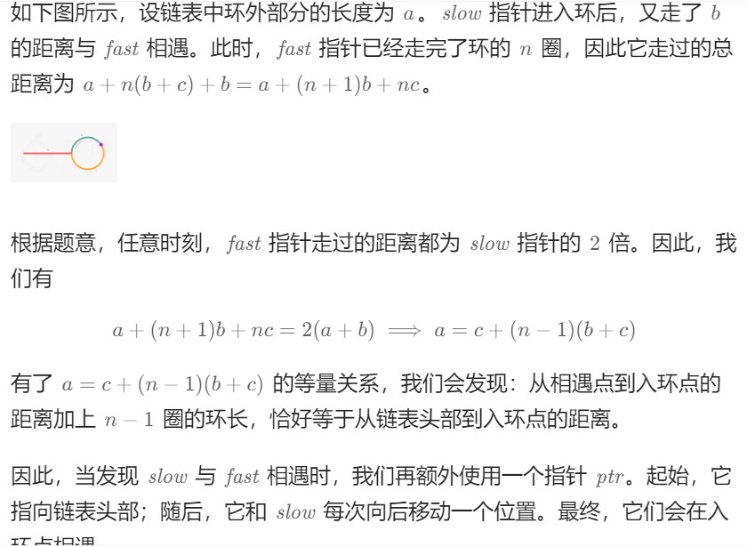

链表 前言： 链表部分之前刷力扣也做过一些，基本做不出来，都是看题解，希望这次训练可以在链表的题目上有些进步叭；）
1.相交链表
描述：给你两个单链表的头节点 headA 和 headB ，请你找出并返回两个单链表相交的起始节点。如果两个链表不存在相交节点，返回 null 。
解法一：
思路：两个链表相交，采用双指针的方法，开始分别指向两个链表头，同步向后走，一旦走完一个链表就换另一个链表头继续走，那么两个指针会在相交位置刚好重逢（如果相交的话），否则就返回null。
代码：
1 2 3 4 5 6 7 8 9 10 11 12 public class Solution {public ListNode getIntersectionNode (ListNode headA, ListNode headB) {if (headA == null || headB == null ) return null ;ListNode pA = headA;ListNode pB = headB;while (pA != pB){null ? headB : pA.next;null ? headA : pB.next;return pA;
非常巧妙的双指针，简洁有力的解决问题。简写的条件判断自己写的话用的比较少，可以学习一下。
解法二：
思路：用哈希表存下一个链表的所有节点，再遍历另一个链表去找相交点，由于哈希表里存的是地址，所以是可行的。
代码：
1 2 3 4 5 6 7 8 9 10 11 12 13 14 15 16 17 18 public class Solution {public ListNode getIntersectionNode (ListNode headA, ListNode headB) {new HashSet <>();ListNode tmp = headA;while (tmp != null ){while (tmp != null ){if (visited.contains(tmp)){return tmp;return null ;
总结：思路并不难，就是对Set这些数据结构要足够熟悉才行。
2.反转链表
描述：给你单链表的头节点 head ，请你反转链表，并返回反转后的链表。
解法一：
思路：采用迭代的方式，设置3个变量prev,cur,next,从链表头开始逐步反转每一条next指针
代码：
1 2 3 4 5 6 7 8 9 10 11 12 13 class Solution {public ListNode reverseList (ListNode head) {ListNode prev = null ;ListNode cur = head;while (cur != null ){ListNode next = cur.next;return prev;
总结：最直白的思路，但是还是要对链表的基础足够熟悉才行。
解法二：
思路：采取递归，一直往后，那么假设后半段链表已经反转过来，形成类似O->O->O->O <-O<-O,那么中间这个的前一个head的next.next修改为自己，再head.next=null，即可变为O->O->O<-O <-O<-O,以此类推。
代码：
1 2 3 4 5 6 7 8 9 10 11 class Solution {public ListNode reverseList (ListNode head) {if (head == null || head.next == null ){return head;ListNode newHead = reverseList(head.next);null ;return newHead;
总结：递归更加抽象，也更加有意思，对于递归的处理有了更深的理解，一般都是倒推，后面的已经完成，怎么处理当前的状况。
3.回文链表：
描述：给你一个单链表的头节点 head ，请你判断该链表是否为回文链表。如果是，返回 true ；否则，返回 false 。
解法一：
思路：用一个数组取出所有节点的val,然后双指针判断是否回文
代码：
1 2 3 4 5 6 7 8 9 10 11 12 13 14 15 16 17 18 19 class Solution {public boolean isPalindrome (ListNode head) {new ArrayList <>();ListNode cur = head;while (cur != null ){int l = 0 , r = vals.size() - 1 ;while (l < r){if (!vals.get(l).equals(vals.get(r))){return false ;return true ;
总结：最直接的思路，熟练使用List数据结构，包括add,get,equals方法。
解法二：
思路：利用递归会变相的反向遍历链表这个特点，设置一个从head开始的全局变量进行比较验证。
代码：
1 2 3 4 5 6 7 8 9 10 11 12 13 14 15 16 17 18 19 20 class Solution {private ListNode frontPointer;public boolean recursivelyCheck (ListNode cur) {if (cur == null ){return true ;if (!recursivelyCheck(cur.next)){return false ;if (cur.val == frontPointer.val){return true ;return false ;public boolean isPalindrome (ListNode head) {return recursivelyCheck(head);
总结：实用性不强，因为在许多语言中，堆栈帧的开销很大（如 Python），并且最大的运行时堆栈深度为 1000（可以增加，但是有可能导致底层解释程序内存出错）。为每个节点创建堆栈帧极大的限制了算法能够处理的最大链表大小。但是思路很有意思。
解法三：
思路：为了实现O(1)的空间复杂度，先利用快慢指针找到链表的中间位置，返回后半部分链表，比较两个链表，再恢复链表。
代码:
1 2 3 4 5 6 7 8 9 10 11 12 13 14 15 16 17 18 19 20 21 22 23 24 25 26 27 28 29 30 31 32 33 34 35 36 37 38 39 class Solution {public ListNode endOfFisrtHalf (ListNode head) {ListNode slow = head;ListNode fast = head;while (fast.next != null && fast.next.next != null ){ return slow;public ListNode reverseList (ListNode head) {ListNode prev = null ;ListNode cur = head;while (cur != null ){ListNode next = cur.next;return prev;public boolean isPalindrome (ListNode head) {if (head == null ) return true ;ListNode firstHalfEnd = endOfFisrtHalf(head);ListNode secondHalfStart = reverseList(firstHalfEnd.next);ListNode p1 = head;ListNode p2 = secondHalfStart;boolean res = true ;while (res && p2 != null ){if (p1.val != p2.val){false ;return res;
总结：和之前的反转链表连起来了，很美妙的做法，以及通过快慢指针找中间节点的方法，感觉也很常用。
4.环形链表
解法一：
思路：利用快慢指针，慢指针一次走一步，快指针一次走两步，如果有环，那么快指针一定比慢指针先进入，继而落后于慢指针，由于此时快指针与慢指针的距离每次减少1 ，环可以看作是无限的直线，所以一定会相遇 。
代码：
1 2 3 4 5 6 7 8 9 10 11 12 13 public class Solution {public boolean hasCycle (ListNode head) {if (head == null || head.next == null ) return false ;ListNode slow = head;ListNode fast = head.next;while (slow != fast){if (fast == null || fast.next == null ) return false ;return true ;
总结：神奇的快慢指针，与环结合很适合用来做相遇，很棒的思路~
5.环形链表||
描述：给定一个链表的头节点 head ，返回链表开始入环的第一个节点。 如果链表无环，则返回 null。
解法一：
1 2 3 4 5 6 7 8 9 10 11 12 13 14 15 public class Solution {public ListNode detectCycle (ListNode head) {new HashSet <>();ListNode pos = head;while (pos != null ){if (visited.contains(pos)){return pos;else {return null ;
解法二： 
思路：还是基于快慢指针，并且通过数学计算发现相遇后，从头节点到入环点的距离等于相遇点到入环点的距离。
代码：
1 2 3 4 5 6 7 8 9 10 11 12 13 14 15 16 17 18 19 20 public class Solution {public ListNode detectCycle (ListNode head) {if (head == null || head.next == null ) return null ;ListNode slow = head, fast = head;while (fast != null ){if (fast.next == null ) return null ;if (slow == fast){ListNode ptr = head;while (ptr != slow){return ptr;return null ;
总结：和直接判断环的题目还是不太一样，首先就是快慢指针的起点都是head,然后导致while判断也发生变化，需要视情况而定。
6.合并两个有序链表
描述：将两个升序链表合并为一个新的 升序 链表并返回。新链表是通过拼接给定的两个链表的所有节点组成的。
解法一：
思路：采用递归的思想，先判断两个头部的值，较小的保留，剩余的两个链表继续合并，直到其中一个链表为空。
代码：
1 2 3 4 5 6 7 8 9 10 11 12 13 class Solution {public ListNode mergeTwoLists (ListNode list1, ListNode list2) {if (list1 == null ) return list2;if (list2 == null ) return list1;if (list1.val < list2.val){return list1;else {return list2;
总结：两种情况再分别递归，实现两个链表中的较小值的逐一合并，很巧妙。
7.两数相加
描述：给你两个 非空 的链表，表示两个非负的整数。它们每位数字都是按照 逆序 的方式存储的，并且每个节点只能存储 一位 数字。请你将两个数相加，并以相同形式返回一个表示和的链表。你可以假设除了数字 0 之外，这两个数都不会以 0 开头。
解法一：
1 2 3 4 5 6 7 8 9 10 11 12 13 14 15 16 17 18 19 20 21 22 23 24 25 26 27 28 class Solution {public ListNode addTwoNumbers (ListNode l1, ListNode l2) {ListNode head = null , tail = null ;int carry = 0 ;while (l1 != null || l2!= null ){int n1 = l1 != null ? l1.val : 0 ;int n2 = l2 != null ? l2.val : 0 ;int sum = n1 + n2 + carry;if (head == null ){new ListNode (sum % 10 );else {new ListNode (sum % 10 );10 ;if (l1 != null ){if (l2 != null ){if (carry > 0 ){new ListNode (carry);return head;
总结：思路很清晰，主要是写代码要多多注意细节问题~
8.排序链表
描述：给你链表的头结点 head ，请将其按 升序 排列并返回 排序后的链表 。
解法一：
思路：自顶向下 ，采用归并递归的方法，不断细分链表，直到不能再细分然后进行合并两个有序链表。时间复杂度为O(NlogN),空间复杂度为O(NlogN)，因为用到了栈的递归空间。
代码：
1 2 3 4 5 6 7 8 9 10 11 12 13 14 15 16 17 18 19 20 21 22 23 24 25 26 27 28 29 30 31 32 33 34 35 36 37 38 39 40 41 42 43 44 45 46 class Solution {public ListNode sortList (ListNode head) {return sortList(head, null );public ListNode sortList (ListNode head, ListNode tail) {if (head == null ) return head; if (head.next == tail){null ;return head;ListNode slow = head, fast = head;while (fast != tail){if (fast != tail){ListNode mid = slow;ListNode list1 = sortList(head, mid);ListNode list2 = sortList(mid, tail);ListNode sorted = merge(list1, list2);return sorted;public ListNode merge (ListNode head1, ListNode head2) {ListNode dummyHead = new ListNode (0 );ListNode tmp1 = head1, tmp2 = head2;ListNode temp = dummyHead;while (tmp1 != null && tmp2 != null ){if (tmp1.val <= tmp2.val){else {if (tmp1 != null ){else if (tmp2 != null ){return dummyHead.next;
总结：关键点就是归并实现最终的排序，一些细节问题需要注意，比如需要断链然后再重新合并(tail这个节点很关键)，merge方法还要更加熟练。
解法二：
思路：自底向上 ，先把链表分为subLen为1的子链表，两两合并，subLen再乘2重复操作，直到大于等于链表长度。涉及到两个子链表的拆分(cur)然后再合并（prev）,细节要很清楚才行。时间复杂度为O(NlogN),空间复杂度为O(1) .
代码：
1 2 3 4 5 6 7 8 9 10 11 12 13 14 15 16 17 18 19 20 21 22 23 24 25 26 27 28 29 30 31 32 33 34 35 36 37 38 39 40 41 42 43 44 45 46 47 48 49 50 51 52 53 54 55 56 57 58 59 60 61 62 class Solution {public ListNode sortList (ListNode head) {if (head == null ) return null ;ListNode dummyHead = new ListNode (0 );int len = 0 ;ListNode node = head;while (node != null ){for (int subLen = 1 ; subLen < len; subLen <<= 1 ){ListNode prev = dummyHead;ListNode cur = dummyHead.next;while (cur != null ){ListNode head_1 = cur;for (int i = 1 ; i < subLen && cur != null && cur.next != null ; i++){ListNode head_2 = cur.next;null ;for (int i = 1 ; i < subLen && cur != null && cur.next != null ; i++){ListNode next = null ;if (cur != null ){null ;ListNode merged = merge(head_1, head_2);while (prev.next != null ){return dummyHead.next;public ListNode merge (ListNode head1, ListNode head2) {ListNode dummyHead = new ListNode (0 );ListNode tmp1 = head1, tmp2 = head2;ListNode temp = dummyHead;while (tmp1 != null && tmp2 != null ){if (tmp1.val <= tmp2.val){else {if (tmp1 != null ){else if (tmp2 != null ){return dummyHead.next;
总结：这是一道很棒的题目，深入熟悉了两种做法，特别是两种优秀的底层思路，归并和自底向上。自底向上的思路说起来简单，但是操作起来常常有很多细节需要反复推敲，熟能生巧叭~
9.两两交换链表中的节点
描述：给你一个链表，两两交换其中相邻的节点，并返回交换后链表的头节点。你必须在不修改节点内部的值的情况下完成本题（即，只能进行节点交换）
解法一：
思路：本质就是交换链表中的两个节点，然后采取递归的方式不断往后走。
代码：
1 2 3 4 5 6 7 8 9 10 class Solution {public ListNode swapPairs (ListNode head) {if (head == null || head.next == null ) return head;ListNode newHead = head.next;return newHead;
总结：自己写出来的一道题目，很棒，刚开始swapPairs里写成了head.next.next，然后根据输出debug解决了问题，很不错~
10.随机链表的复制
描述：给你一个长度为 n 的链表，每个节点包含一个额外增加的随机指针 random ，该指针可以指向链表中的任何节点或空节点。构造这个链表的 深拷贝 。 深拷贝应该正好由 n 个 全新 节点组成，其中每个新节点的值都设为其对应的原节点的值。新节点的 next 指针和 random 指针也都应指向复制链表中的新节点，并使原链表和复制链表中的这些指针能够表示相同的链表状态。 复制链表中的指针都不应指向原链表中的节点
解法一：
思路：由于random指针可能指向后面的未创建的节点，所以采用回溯+哈希表 ，直接往下递归，把对应的节点返回来即可。时间和空间复杂度都是O(N)。
代码：
1 2 3 4 5 6 7 8 9 10 11 12 13 class Solution {new HashMap <>();public Node copyRandomList (Node head) {if (head == null ) return null ;if (!cacheNode.containsKey(head)){Node newNode = new Node (head.val);return cacheNode.get(head);
总结：原来递归还可以用于回溯 ，其实好像递归的本质就有点回溯的意味，那么这道题刚好应用了这一本质，再结合哈希避免了节点的重复复制。
解法二：
思路：采取迭代 的方法，先把每个节点拆分为两个一样的节点，前面一个节点作为原节点，后面一个节点作为复制节点，遍历把后面节点的random指针指向对应的复制节点，最后再拆分链表 。时间复杂度为O（N）,空间复杂度为O（1）。
代码：
1 2 3 4 5 6 7 8 9 10 11 12 13 14 15 16 17 18 19 20 21 class Solution {public Node copyRandomList (Node head) {if (head == null ) return null ;for (Node node = head; node != null ; node = node.next.next){Node newNode = new Node (node.val);for (Node node = head; node != null ; node = node.next.next){Node newNode = node.next;null ) ? node.random.next : null ;Node newHead = head.next;for (Node node = head; node != null ; node = node.next){Node newNode = node.next;null ) ? newNode.next.next : null ;return newHead;
总结：由于链表的特性采取复制节点的想法，那么next指针的复制就很自然，random指针的复制也很方便，很巧妙的方法~
解法三：
思路：直接先忽略random指针复制出链表的结构，然后再针对random指针进行复制即可。其中利用map 键值对来维护节点和它的复制节点的关系。
代码：
1 2 3 4 5 6 7 8 9 10 11 12 13 14 15 16 17 18 class Solution {public Node copyRandomList (Node head) {if (head == null ) return null ;Node cur = head;new HashMap <>();while (cur != null ){new Node (cur.val));while (cur != null ){return map.get(head);
总结：超级简单易懂，巧妙地采取了Map来维护，非常巧妙！